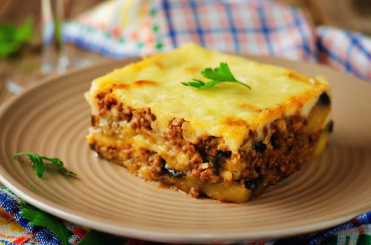

Moussaka

Description
Moussaka is one of the best known Greek dishes– a baked casserole consisting of ground lamb meat
and layers of sliced eggplant, covered with a thick layer of bechamel sauce that gets golden and
crusty as it bakes. The lamb is sometimes replaced with beef, while the eggplants might be
replaced with zucchini or potatoes.
Ingredients
Moussaka
- 1 lb chopped meat
- 3 tbsp butter or lard
- 3 tbsp chopped onions
- 1 cup tomato sauce
- 1/2 cup dry breadcrumbs
- 1 cup grated cheese
- 2 tbsp chopped parsley
- 1 cup white wine
- 1 cup water
- 3 or 4 round eggplants (medium size)
- Spices: Salt, ground pepper, ground nutmeg
For Bechamel Sauce
- 1 quart milk
- 1 cup flour
- 3-4 tbsp butter
- 2 eggs
- Spices: Salt, white pepper, grated nutmeg
Steps
- Heat the butter or lard and sauté chopped onions until browned. Next, add the meat and stir until mixture reaches crumbly texture.
- Stir in tomato sauce, wine, water, salt, pepper, parsley and nutmeg.
- Use a lid to cover the pan and cook over low heat for one hour.
- Cut the eggplants in thick slices. Sprinkle with salt and let strain in a colander. Fry the eggplant slices in deep fat, and strain again. Moussaka can be made using other vegetables, such as potatoes, the combination of potatoes and eggplants, or eggplants, potatoes and pumpkins.
- Prepare the béchamel by slowly heating milk, flour, butter, salt, white pepper and grated nutmeg. Add the eggs, and whisk until thick and completely smooth.
- Place the eggplants in shallow pan and sprinkle with breadcrumbs. Remove the meat from stove and stir in half the amount of grated cheese and half of breadcrumbs. Using a spoon, spread an even layer of cooked meat over the fried eggplants.
- Pour the béchamel sauce over the meat and eggplants. Place the remaining cheese and breadcrumbs on top. Finish with melted butter and bake for 15 minutes. The moussaka is done when the top has turned golden brown.
- Allow to cool and serve cut in squares.